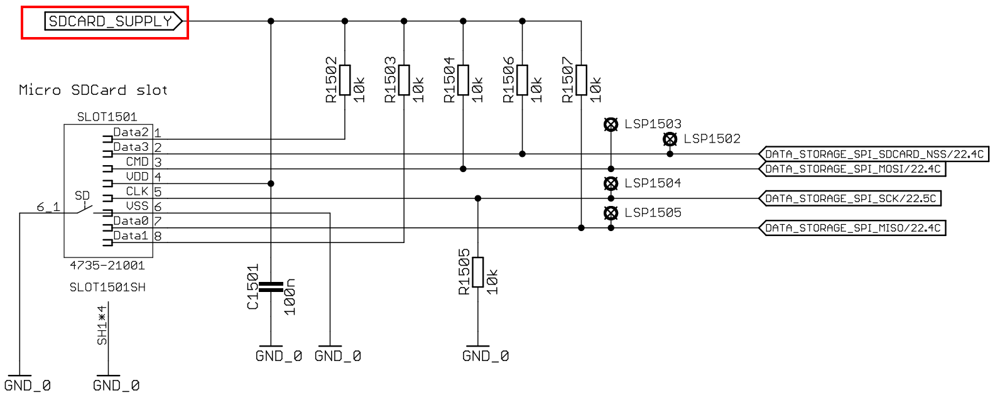
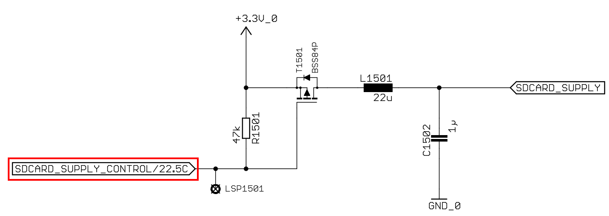

SD Card with foxBMS
An SD Card female connector is available on foxBMS Extension board. It is therefore, available for us to store and read some data under, such as, text files, csv files. In the range of this post, I firstly programm the SD card as a module in src for primary MCU. Then, in the second part, I will create a task to write and read data in text file. Let’s begin this task by several preparations!
Notices
The version of foxBMS’s embedded software I am using is NOT the newest version-1.0.0. There might needed changes, but I hope that the following jobs can be integrated easily into the newest software version.
[Requirements]
1/ A SD Card, which is formated under FAT. You can do it by Quick Format in Windows.
2/ FatFs Module by Chan. I used FatFs R0.13a. For a easier setup, I recommend to download the “FatFs sample projects for various platforms” (scroll down to the end of the FatFs page and download!).
3/ A running foxBMS project on Eclipse. Debugging with Eclipse is not important, because I got problems while using Eclipse under Debug mode. So, it must only compile and generate “.hex” file.
[Getting Start]
The foxBMS communicates with SD card through SPI6 perripheral, which is also shared for EEPROM module. Therefore, each time reading and writing to SD card, users must check whether the EEPROM is deployed or not. Moreover, the SD Card is by default not deployed by the program, i.e, not powered. An output low on SDCARD_SUPPLY_CONTROL lets the card turn on for functions.
 Figure 1: Connections at SD Card module on BMS Extension board.
 Figure 2: SD card”s power supply control.
[Programming]
1/ Naviagate to “../foxBMS_primary/src/module/” . Create a new folder: sdcard.
2/ Remember that we downloaded the “FatFs sample projects for various platforms”? For the task I am doing, I need to copy those files: ff.h, ff.c, ffconf.h, ffunicode.c, integer.h, diskio.h, mmc_stm32f1.c in the sample for STM32 folder. For anyone that are familiar to FatFs, the file “mmc_stm32f1.c” has the same function as “diskio.c”. Therefore, I prefer to rename mmc_stm32f1.c into diskio.c.
3/ Let’s go through the ffconf.h, I will only mention the changes in comparision to the original sample.
“#define FF_USE_STRFUNC 2”: Useful if we wanto read lines in files.
“#define FF_USE_FIND 1”
“#define FF_USE_FASTSEEK 1”
“#define FF_USE_FORWARD 1”
“#define FF_CODE_PAGE 850”
“#define FF_USE_LFN 2”: Enable Long File Name instead of 8.3 format. As the name says, it allows FatFs to read file names, which are longer than 8 characters.
“#define FF_LFN_UNICODE 0”
“#define FF_VOLUMES 1”, “#define FF_STR_VOLUME_ID 1”, “#define FF_VOLUME_STRS “SD”: those three configurations come together, meaning that we use only SD card and prefer to use the name “SD:” for the root directory on SD card while reading and writing.
“#define FF_FS_LOCK 10”: Allow us to open upto 10 files simutaneously.
4/ Since FatFs is “completely separated from the disk I/O layer”, it does not include the SPI communication, which allow the primary MCU to read or write, bit per bit, to the card. The object in this step is, therefore, to implement such this low-level layer, in diskio.c file. I prefer to write my own functions, because the given sample uses MCU’s Timer taking care of the delay, but actually, I do not have any timer left.
Let’s talk about the structure of diskio.c for a better understanding. There are five critical functions that must always exist:
DSTATUS disk_initialize (BYTE pdrv);
DSTATUS disk_status (BYTE pdrv);
DRESULT disk_read (BYTE pdrv, BYTE* buff, DWORD sector, UINT count);
DRESULT disk_write (BYTE pdrv, const BYTE* buff, DWORD sector, UINT count);
DRESULT disk_ioctl (BYTE pdrv, BYTE cmd, void* buff);
Rest of the file are some deffinitions and static functions.
I will start writing with a blank diskio.c. Firstly, I need some headers and deffinitions.
#include "general.h"
#include "uart.h"
#include "spi_cfg.h"
#include "diskio.h" /* FatFs lower layer API */
#include "ff.h"
#include "string.h"
/* Definitions of physical drive number for each media */
#define ATA 0
#define USB 1
#define SDRAM 2
#define SPI_FLASH 3
/* MMC/SD command */
#define CMD0 (0) /* GO_IDLE_STATE */
#define CMD1 (1) /* SEND_OP_COND (MMC) */
#define ACMD41 (0x80+41) /* SEND_OP_COND (SDC) */
#define CMD8 (8) /* SEND_IF_COND */
#define CMD9 (9) /* SEND_CSD */
#define CMD10 (10) /* SEND_CID */
#define CMD12 (12) /* STOP_TRANSMISSION */
#define ACMD13 (0x80+13) /* SD_STATUS (SDC) */
#define CMD16 (16) /* SET_BLOCKLEN */
#define CMD17 (17) /* READ_SINGLE_BLOCK */
#define CMD18 (18) /* READ_MULTIPLE_BLOCK */
#define CMD23 (23) /* SET_BLOCK_COUNT (MMC) */
#define ACMD23 (0x80+23) /* SET_WR_BLK_ERASE_COUNT (SDC) */
#define CMD24 (24) /* WRITE_BLOCK */
#define CMD25 (25) /* WRITE_MULTIPLE_BLOCK */
#define CMD32 (32) /* ERASE_ER_BLK_START */
#define CMD33 (33) /* ERASE_ER_BLK_END */
#define CMD38 (38) /* ERASE */
#define CMD55 (55) /* APP_CMD */
#define CMD58 (58) /* READ_OCR */
/* Declare private variables */
static volatile DSTATUS stt = STA_NOINIT;
static BYTE CardType; /* Card type flags */
uint8_t dumm=0xFF;
Next, checking the power supply to SD card and SPI is free from EEPROM or not.
static uint8_t SD_Enabled(void) {
if(IO_ReadPin(IO_PIN_MCU_0_SDCARD_SUPPLY_CONTROL)==GPIO_PIN_RESET) return 1; //Return 1 if pin is low, meaning that sd card is powered.
else return 0;
}
static uint8_t SPI_free(void){
if(IO_ReadPin(IO_PIN_MCU_0_DATA_STORAGE_EEPROM_SPI_NSS)==GPIO_PIN_RESET) return 0; //Return 0 = "not ready" if CS for EEPROM is low
else return 1;
}
Chip Select(CS) is of course needed.
/* Set CS Pin low or high */
static void CS_LOW(void){
IO_WritePin(IO_PIN_MCU_0_DATA_STORAGE_SCCARD_SPI_NSS,IO_PIN_RESET);
}
static void CS_HIGH(void){
IO_WritePin(IO_PIN_MCU_0_DATA_STORAGE_SCCARD_SPI_NSS,IO_PIN_SET);
}
The first brick to build “Fat_fox” home:
/* Send single byte */
static BYTE xchg_spi(BYTE Byte){
BYTE receivedbyte = 0;
if(HAL_SPI_TransmitReceive(&spi_devices[1],(uint8_t*) &Byte,(uint8_t*) &receivedbyte,1,0x1000)!=HAL_OK)
{
HAL_UART_Transmit(&uart_cfg[0],(uint8_t *)"error_txrx\r\n",12,0x100);
}
return receivedbyte;
}
…and the first walls:
/* Receive multiple byte */
static void rcvr_spi_multi (
BYTE *buff, /* Pointer to data buffer */
UINT btr /* Number of bytes to receive (even number) */
)
{
/* Read multiple bytes, send 0xFF as dummy */
int cnt;
for (cnt=0;cnt<btr;cnt++) buff[cnt] = xchg_spi(0xFF);
}
#if _USE_WRITE
/* Send multiple byte */
static void xmit_spi_multi (
const BYTE *buff, /* Pointer to the data */
UINT btx /* Number of bytes to send (even number) */
)
{
/* Write multiple bytes */
HAL_SPI_Transmit(&spi_devices[1],(uint8_t *)buff,btx,0x100);
}
#endif
The next important functions, which I believe that you can programm yourself, are named as below. In this blog, I would not post them all because of Copy Right issues. I would like to give some hints and wish you success.
- Instead of using Timer, I just declared a variable, said “timer”, to a certain value, and decreased it to create a loop or delay.
- deselect and select might be used by orther library, so I recommend to rename to SDdeselect and SDselect.
static void deselect(void);
static int select(void);
static int rcvr_datablock ( BYTE *buff, UINT btr);
static int xmit_datablock ( const BYTE *buff, BYTE token);
static BYTE send_cmd ( BYTE cmd, DWORD arg );
[Running]
I use the following pieces of code to read all lines in a text file:
FATFS FatFs;
FIL File;
FRESULT res;
IO_PIN_STATE_e state_EEPROM_CS;
state_EEPROM_CS=IO_ReadPin(IO_PIN_MCU_0_DATA_STORAGE_EEPROM_SPI_NSS);
IO_WritePin(IO_PIN_MCU_0_SDCARD_SUPPLY_CONTROL,IO_PIN_RESET);
IO_WritePin(IO_PIN_MCU_0_DATA_STORAGE_EEPROM_SPI_NSS,IO_PIN_SET);
IO_WritePin(IO_PIN_MCU_0_DATA_STORAGE_SCCARD_SPI_NSS,IO_PIN_SET);
res = fmount(&FatFs, "0:", 1);
if ( res == FR_OK) {
DEBUG_PRINTF((uint8_t* )"Mount SDCard ok\n");
res= fopen(&File, "Sample.txt", FA_READ);
if (res== FR_OK) {
//LineIDX Starts from 1
char VChar ;
WCHAR CharBuffer[10];
while (feof(&File) == 0)
{
VChar = fgets((char)CharBuffer, 20, &VoltFile);
DEBUG_PRINTF((uint8t )VChar)
}
fclose(&File);
}
else{
DEBUG_PRINTF((uint8t )"open fail!");
}
fmount(0,"0:", 1);
}else{
DEBUG_PRINTF((uint8t )"mount fail!");
}
IO_WritePin(IO_PIN_MCU_0_DATA_STORAGE_EEPROM_SPI_NSS,state_EEPROM_CS);